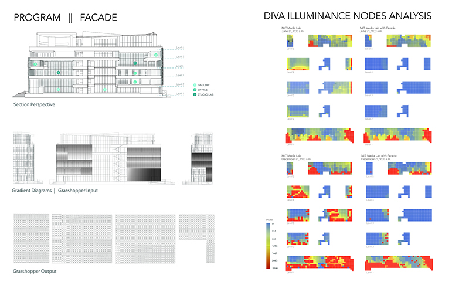
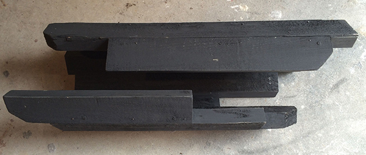
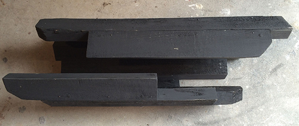

Where Is the Architecture Button
Connie Wang RISD '16 B.ARCH, Hanson Cheng RISD '16 B.ARCH, and Ana Cristina Baquerizo RISD '16 B.ARCH
3D printed porcelain, high performance facades
Prototyped facade 2' x 4', 1/8 model 28" x 9" x 6"
Where Is the Architecture Button
Connie Wang RISD '16 B.ARCH, Hanson Cheng RISD '16 B.ARCH, and Ana Cristina Baquerizo RISD '16 B.ARCH
3D printed porcelain, high performance facades
Prototyped facade 2' x 4', 1/8 model 28" x 9" x 6"
This project is an integrated computational and digital fabrication prototype for a custom high performance ceramic facade system. In designing a high performance facade, one that is tailored to the lighting conditions based on programmatic needs of a space, the additive manufacturing process has allowed for a highly optimized design with greater flexibility, variety, and possibly efficiency in construction. The Grasshopper and DIVA plug-in for Rhinoceros work concurrently to generate and assess fabrication models in terms of daylight. The MIT Media Lab was chosen as a case study and experiment for the 3D printed optimized facade due to its variability in programmatic elements within one elevation of the building. This project aims to address the implications of the additive manufacturing process on an architectural scale.
The design of the facade via Grasshopper and the experimental phase of the printing developed concurrently. The extruder was reconfigured from an existing Ryobi caulking gun to efficiently extrude a special mix of porcelain and sand called CV90 made specifically in the RISD ceramics department. The most ideal mixture and consistency of the clay became a determinant in both the configuration of the extruder, as well as the design of individual components because of its structural properties and understanding the limit of the material.
Experimental clay and salt dough extrusions. Testing of material and geometry.

Detail drawings of extruder iterations and circuit diagram.

Scaled final ceramic prototype. CV90 clay on lasercut steel frame.
Work space setup
Extruder in process of printing.
Front elevation of 1/8th Scaled model of the designed facade on MIT Media Lab.
Close up of 3D printed facade on MIT Media Lab.
Day lighting analysis of grasshopper design output
Where Is the Architecture Button
Connie Wang, Hanson Cheng, and Ana Cristina Baquerizo


 
